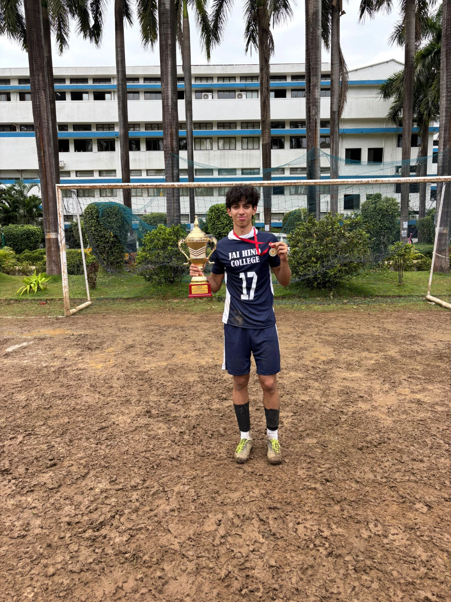
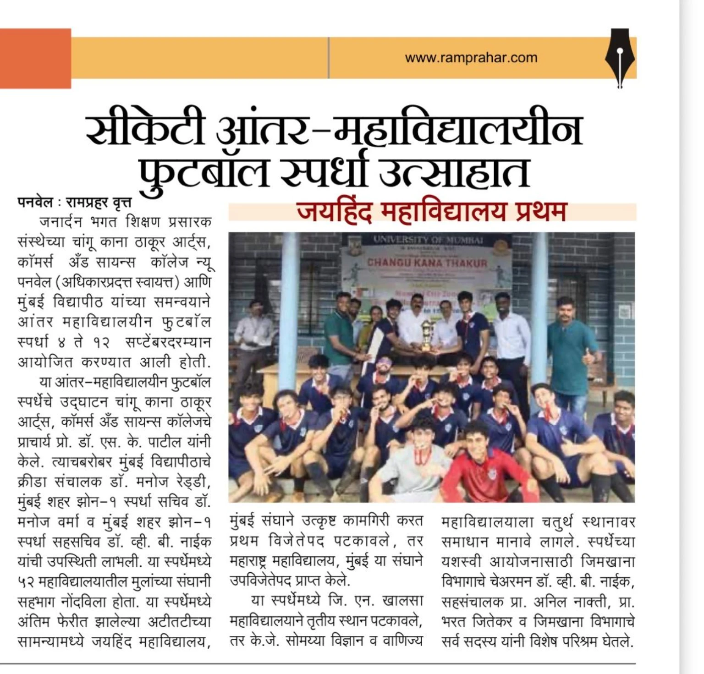

DSO Gold Medal
Jai Hind College
Won a DSO Gold medal representing Jai Hind College in football.
I’m Tanay Rawat, a Software Development student at Jai Hind College, Mumbai. I’m learning to turn ideas into useful digital experiences through code — one project at a time.
A student, a developer in the making, and a footballer who enjoys setting goals and working hard to reach them.
I’m currently pursuing a B.Voc in Software Development at Jai Hind College. I’m at the beginning of my journey in tech, building a strong foundation in programming and web development while exploring what I can create with it.
A few milestones from my football journey — built through consistency, teamwork and competition.
Won a DSO Gold medal representing Jai Hind College in football.
Recognised as the league’s top goalscorer.
Secured second place in a competition.
A few snapshots from representing Jai Hind College and celebrating the work behind the results.


Developing technical knowledge and practical skills through college and self-learning.
Jai Hind College, Mumbai
I’m continuously learning and strengthening these foundations as I work towards becoming a well-rounded developer.
This section will grow as I complete projects and turn what I learn into things people can use.
New builds will appear here as I develop them.
Small experiments in C++, Python and web development.
I’m open to connecting with fellow students, developers and people working on interesting ideas. Add your preferred email or social links here to make this section live.